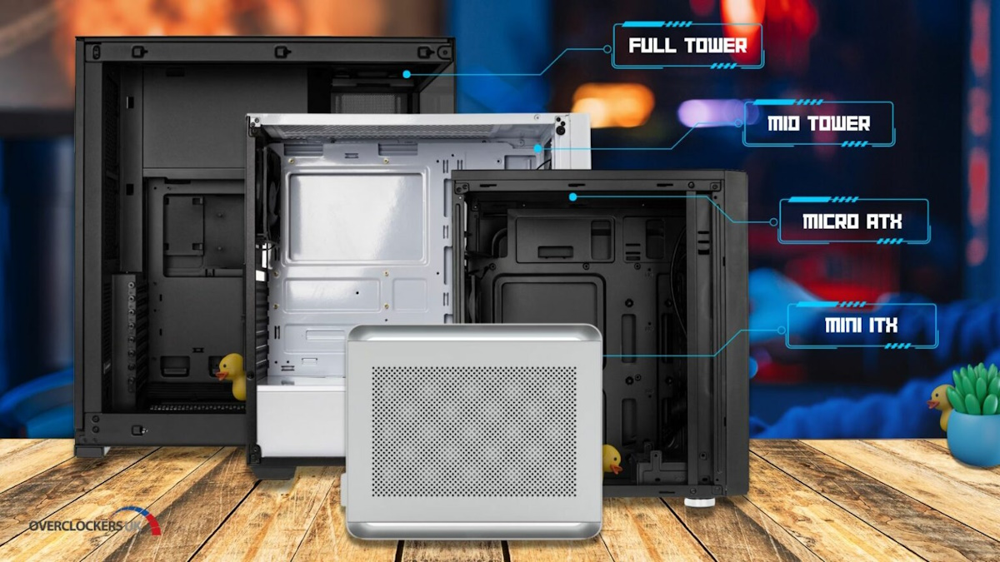

PC Cases
Shown above are the most popular case sizes with some sizes in between.
- Full Tower
- Mid Tower
- Micro ATX
- Mini ITX
Full Tower Cases
Full tower cases are the largest and offer the most space for components. They can accommodate extended ATX (EATX) and XL-ATX motherboards, multiple graphics cards, numerous storage drives, and extensive cooling solutions such as large radiators and multiple fans. Full tower cases are ideal for high-end gaming rigs, workstations, or servers where expandability and airflow are critical.
Mid Tower Cases
Mid tower cases are the most popular choice for gaming and enthusiast builds. They offer a good balance between size and functionality, accommodating standard ATX motherboards, several storage drives, multiple expansion cards, and adequate cooling options. Mid tower cases are versatile and suitable for most builds, offering plenty of space while remaining relatively compact. As it is more popular, it is the most accessible option.
Small Form Factor Cases
Small form factor(SFF) cases vary from the mini tower size to Mini-ITX(m-ITX) sizes. Most of these cases are only large enough to fit m-ITX motherboards with some exceptions extending to microATX(mATX). These cases are compact and designed to fit very little. Building in such a case requires extensive planning, organization, component knowledge, and cable management. Because it is smaller, SFF cases will require more in-depth design and more complicatedly designed components. Not only will the case be expensive, but components like the motherboard, cooler, power supply, and compatible graphics card may be difficult to find at cheaper prices.